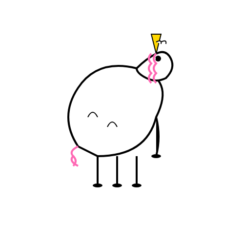

Welcome to Pippin GPT
How may I assist you?
Chat Session
Hello! I am Pippin. I'm ready to help you explore ideas or answer your questions delicately.
How may I assist you?
Hello! I am Pippin. I'm ready to help you explore ideas or answer your questions delicately.